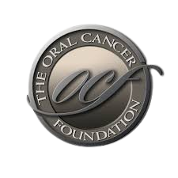

What is it?
The Oral Cancer Foundation is an IRS registered nonprofit 501(c) 3 and public service charity designed for advancy and service and to promte change in the community.
One of the foundation's forefront missions is to raise awareness for the need to undergo annual oral cancer screening. This need has become espcially prevalent through the increasing rate of occurence in oral cancer annually, and about 58,500 people in the US will be newly diagnosed with oral cancer this year. If caught early, the person diagnosed with oral cancer has a 80 to 90% survival rate; however, because the majority are found as late stage cancers, there is a high death rate of 43%.
COMPLIMENTARY ORAL CANCER SCREENINGS provided by Piney Point Oral & Maxifacial Surgery